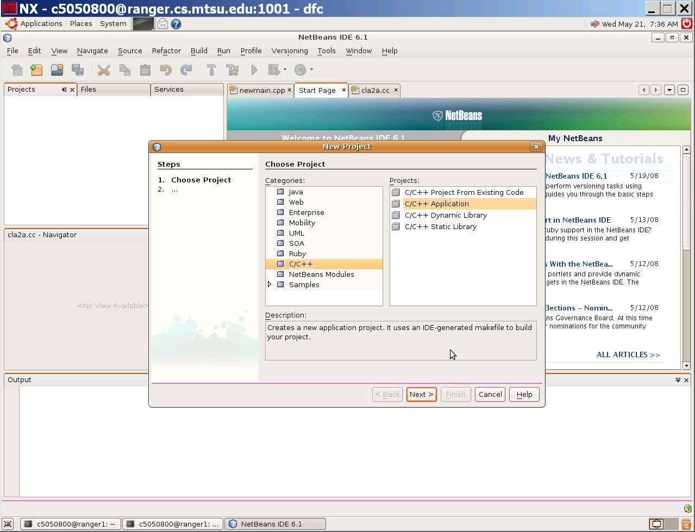
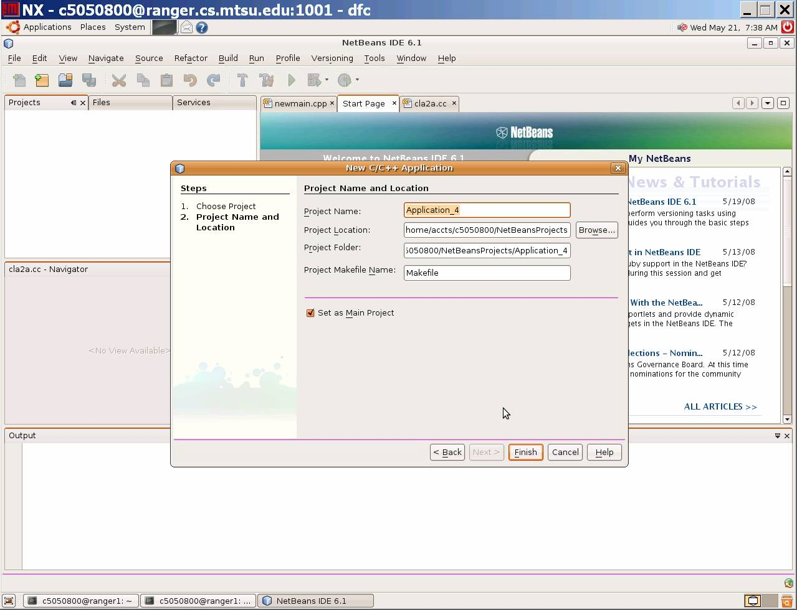
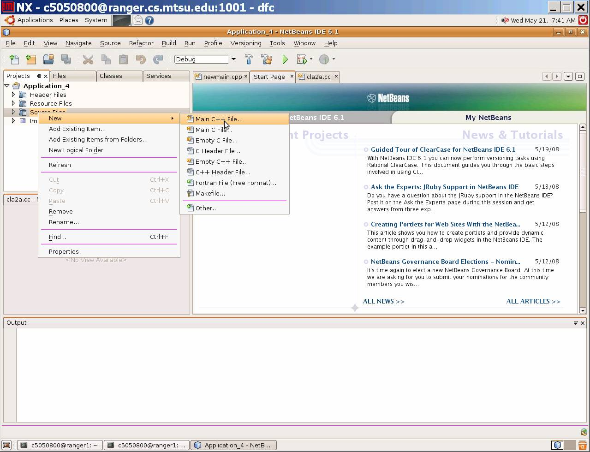
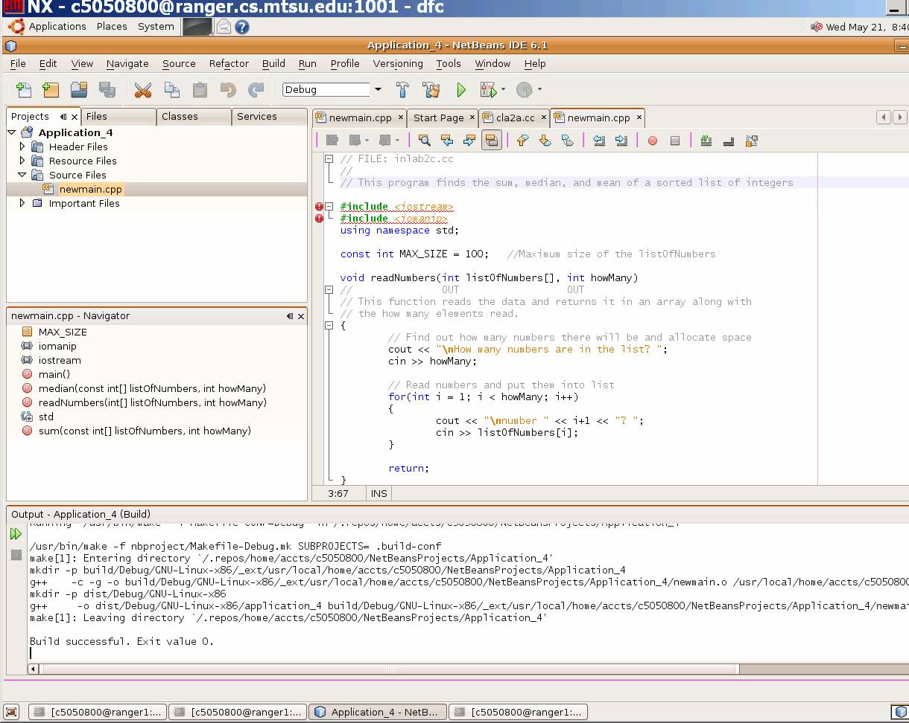
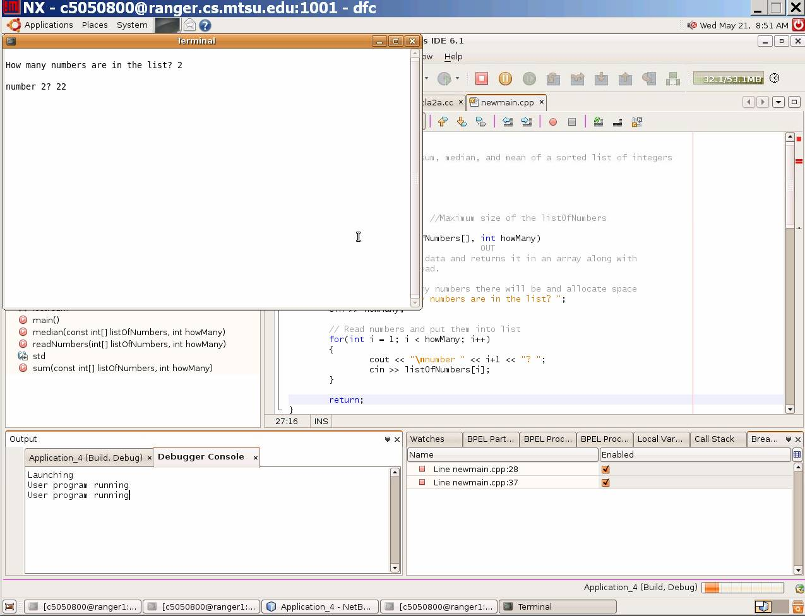
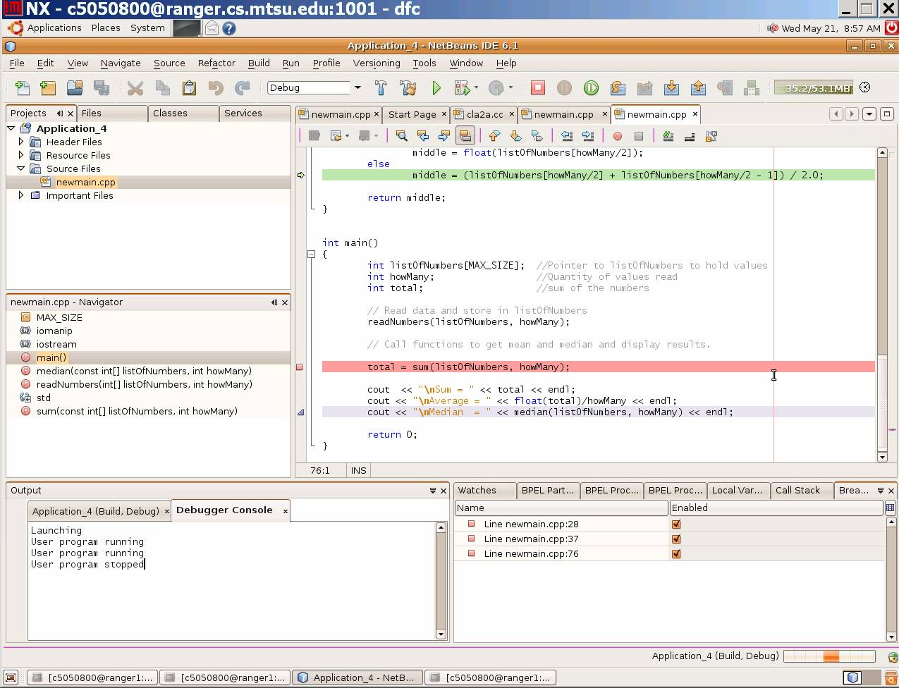
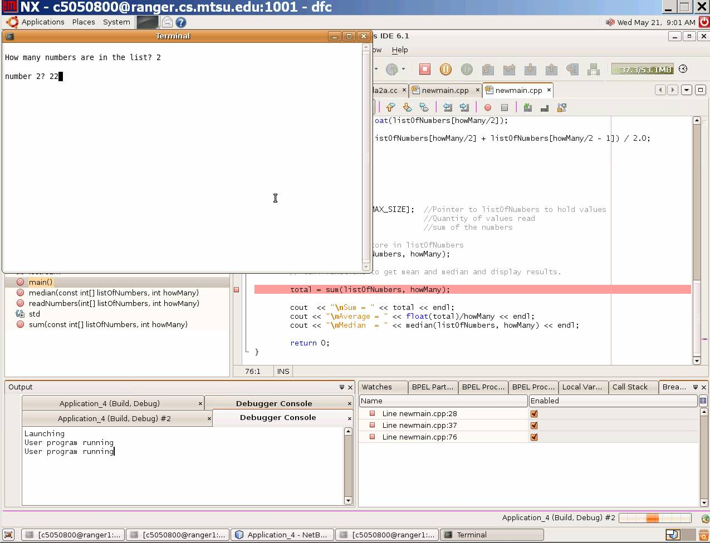
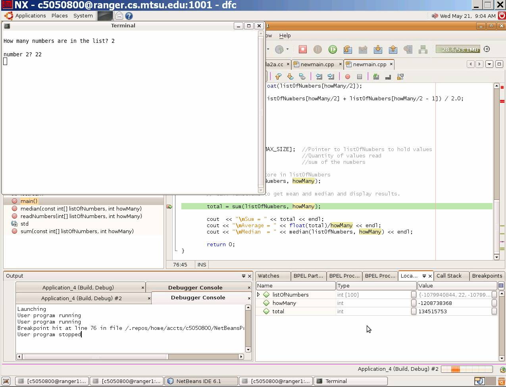
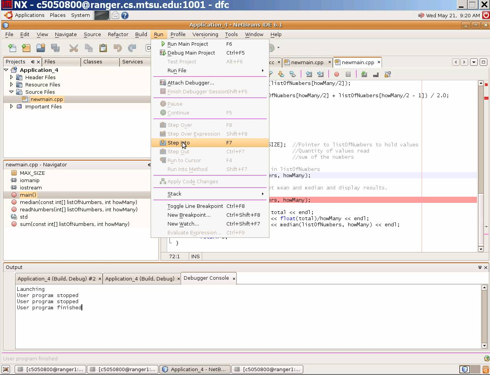

|
|
A. Locating program errors
B. Debugging Techniques
C. Using the NetBeans Debugger
segmentation fault: core dumped
For whatever reason, the outcome of executing the program does not
produce the expected/desired results.
Historically nonsyntax errors in programs are called "bugs."
The term bug was first coined by Grace Hopper, the creator of COBOL (COmmon Business Oriented Language)
and the first assembly language. In 1945, the famous Mark I
computer came to a halt. Workers found a
moth inside the computer, removed the offending beast and the computer
was
fine! From then on, all mysterious problems with computing were
called bugs.
There are numerous famous bugs in computing and the list grows longer each year. For example, the Russians lost a space ship in mid-flight when an erroneous command transmitted from mission control sent the space ship into a test routine from which it never recovered. This could have easily been prevented if had been some safety "switch" that prevented the accidental execution of such a test sequence.
A multi-million dollar X-ray machine killed at least two people by administering excessive doses of radiation. The cause of the error was traced to a certain sequence of editing commands. One day programmers may need "malpractice insurance" like physicians do today to protect themselves in such situations.
Can bugs be avoided? Yes and no. Software Engineering is
dedicated
to developing techniques for building better software. Our goal
is
to be as good at building software as an engineer is at building a
bridge.
Bridges rarely fail just as software should rarely fail. To help
reduce
errors in software, we have developed paradigms of software
development.
A paradigm is a method with all its related steps and techniques (i.e.,
an
approach). In the 1970's, a software development paradigm called
the
Waterfall paradigm was developed. It was so named because
each
step or phase supplies information to the next like water flows over a
waterfall.
The phases are as follows:
| Analysis | ||||
| Design | ||||
| Implementation | ||||
| Testing | ||||
| Maintenance |
In the analysis phase, requirements describing what the software product is to do are determined by interviewing the client. The requirements are analyzed and a specifications document is produced. In the design phase, the specifications document is turned into an architectural design in which the software is broken down into modules. The modules are designed in a more detailed fashion that focuses on procedural detail. The data structures are defined at this point. During the implementation phase, the modules are coded and tested. The modules are integrated and tested as a whole in the testing phase. The maintenance phase includes making changes to the software including corrections and enhancements. Many methods such as step-wise refinement and structured programming have been developed to improve the process of software development. We will focus in this lab (and in this course) on the Waterfall paradigm for software development. The object oriented paradigm is another popular method in use today.
Errors can occur at any phase of software development. Any of these errors can lead to serious problems and result in software that does not function as desired. Given the disastrous results with the software in the X-ray machine, we must take every precaution possible to be sure there are no errors in our systems. Several things have been done.
"Formal languages" have been developed in which requirements can be expressed instead of expressing them in ambiguous and imprecise English. The design can be reviewed by a team of professionals for potential problems. Prototypes can be used to clarify requirements or difficult design algorithms. An appropriate high-level language choice will reduce errors. Code walkthroughs help the developer locate many errors. A code walkthrough is a line-by-line reading of a unit of code by a team of professionals. The purpose of each line in the given program is explained. Good documentation habits and good naming conventions decrease errors too. A good design and a good programmer are the best way to avoid coding errors.
Finally, careful testing must be done before software is released. Testing is the process of locating errors and debugging is the process of localizing, analyzing, and removing suspected errors in the code.
If an instruction is written incorrectly it is called a syntax
error and will be caught by the compiler. If a
formula or algorithm is incorrectly implemented, it is called a logic error and
should be caught by the programmer or tester. Errors that manifest themselves
at run time are called run time
errors (i.e., dividing by zero or array index out of range).
A theory of debugging was developed by Poston that is based on Most Probable Errors (MPEs). MPEs are the most frequent mistakes made by programmers. The most likely place to contain an error is in an IF - THEN - ELSE conditional expression. The second most likely place for errors is in input/output statements and the third is in loops. According to this theory, you should check the conditional expression in any If statement first. Then I/O statements should be checked and finally loops should be examined.
How does one localize and analyze an error? There are standard debugging techniques that can be used. You will practice these in this lab. They are as follows:
A program is written only once but is read many times. Donald Knuth has developed a system, called CWEB , that helps one develop software as a work of literature. Explaining CWEB is beyond the scope of this lab exercise but we must learn to read our programs for debugging purposes and write programs that are readable. If we read our code to ourselves we often read over our errors. It is a good idea to read our code to another knowledgeable person explaining how each line contributes to the solution.
When reading through program code, often just looking at the code does not help us identify the logic error(s). To help us locate logic errors, we can insert output (cout <<) statements at strategic places in the code to localize errors. These output statements allow us to trace the path of execution or to trace the value of certain variables as the program is executed to determine what part of the code is not functioning correctly. There are 3 types of traces that can be implemented by placing output statements in the code - subprogram trace, statement trace, and variable trace. A subprogram trace is used to determine the order in which subprograms are called. An output statement that outputs the name of the subprogram is placed at the start of every subprogram to implement a subprogram trace. A statement level trace is used to determine where the execution of the program halts. An output statement can be placed after different statements in the code to determine which instructions are executed before the program halts.
If an answer produced by the program is wrong, we look at variables used to calculate this answer. To implement a variable trace, we print the value of variables involved in the calculation at different places to see where one or more of them became incorrect. When a variable of interest is changed, the new value should be printed with the name of the enclosing block and a line number to help identify where the change occurred. All input to the program as well as input to all subprograms should be checked to make sure the values are valid.
Once we locate and fix the problem, the output statements are no longer needed. They can be removed with the editor and the code recompiled. In some languages such as "C++" there is a mechanism by which the output statements can physically be left in the source code but directions can be given to the compiler to omit them when the last compile is done. If the statements are needed later they do not have to be retyped.
Let's consider a program which reads a list of integers and outputs YES if the list is in strictly descending order and it contains at least one but no more than 10 integers. The program outputs NO, otherwise. You, as the software test engineer, need to create test cases and test the program thoroughly to make sure it correctly handles all kinds of inputs.
- a list of 1 to 10 integers in strictly descending order
- a list of 1 to 10 integers in non-strictly descending order (have duplicate values)
- a list of 1 to 10 integers in non-descending order (may or may not have duplicate values)
- no numbers provided in the list
- more than 10 integers provided in the list
- i only
- i and ii only
- i, iv, and v only
- ii, iii, iv, and v only
- i, ii, iii, iv, and v
- None of the above
- 11 10 9 8 7 6 5 4 3 2 1
- 6 5 4 3 2 1
- 5 1 2 3
- -1 -2
- 1
- i and ii
- i, ii, and iv
- i, ii, iv, and v
- ii, iii, and iv
- ii, iv, and v
- None of the above
- YES
- NO
- NaN
- none of the above
- i and ii only
- i, ii, and iii only
- i, iii, iv, and v only
- iii and v only
- iii, iv, and v only
- None of the above
5 4 3 2 1 0 -1 -2 -3 -4 -5
- The list is in strictly descending order
- The list is not in strictly descending order
- The list doesn't contain duplicate values
- The list contains more than 10 integers
- None of the above
Let's consider the program noted in Exercise 1 which reads a list of integers and outputs YES if the list is in strictly descending order and it contains at least one but no more than 10 integers. The program outputs NO, otherwise. The program as given in Exercise 2 below makes use of command line arguments to input the list of integers. For example, if the executable program name is a.out, then the command
a.out 7 6 4 1would execute the program and provide as input to the program the four numbers 7, 6, 4, and 1 and IF it is correctly executing, then it should also produce the output YES. If you are unfamiliar with command line arguments and need additional information after looking at the program code referenced in Exercise 2 below, then see Getting Command Line Arguments in C++
- The program works as specified. True or False
- The program works as specified for list size zero. True or False
- The program works as specified for list size one. True or False
- The program works as specified for list size greater than ten. True or False
- The program works as specified for lists that are strictly descending order. True or False
- The program always prints NO. True or False
- The program always prints YES. True or False
- The program works as specified for list size zero. True or False
- The program works as specified for list size one. True or False
- The program works as specified for list size greater than ten. True or False
- For lists with fewer than ten numbers, the program stops. True or False
- For lists with more than ten numbers, the program runs longer than five seconds . True or False
- The first loop.
- The second loop.
- Both loops.
- Neither loop.
Al Cripps has the code here for convenience
- The problem is in the atoi library function.
- The problem is because the variable descending should be initialized to false instead of true before the second loop .
- The first loop is infinite because the loop index should stop at listSize minus one.
- The second loop is infinite because the loop condition is never false.
- For the first loop, an array index is used outside the bounds of the array.
- For the second loop, an array index is used outside the bounds of the array.
- None of the above.
#include <iostream> // cin, cout
#include <cstdlib> // atoi()
using namespace std;
const int SIZE = 10; // size of the array
int main(int argc, char * argv[])
{
int i; // loop counter
bool descending; // true if the list is in descending order
int list[SIZE]; // array to hold the list
int listSize; // the number of integers in the list
// Set listSize to the number of integers on the command line,
listSize = argc-2;
// Convert the numbers on the command line from ASCII strings to
// integers and store them in the array using the library function atoi function.
for (i = 0; i < listSize; i++)
list[i] = atoi(argv[i+1]);
// Check each pair of adjacent integers to see if the first item
// in the pair is greater than the one following.
descending = true;
for (i = 0; (i < listSize) || descending; i++)
descending = (list[i] > list[i+1]);
// Inform the user of the result
if (descending)
cout << "YES\n";
else
cout << "NO\n";
return 0;
}
NetBeans is an integrated developement environment that
allows a developer to edit, compile/build, debug, and run projects with
components written in multiple languages. It provides simplified code
reuse and has good debugging support. A debugger is a program that controls the
execution of another program for the purpose of locating (and/or
repairing) errors.
NetBeans documentation beyond what is found in this lab can be found at http://www.netbeans.org/kb/index.html
In this lab, we will learn to develop a project written in C++ using NetBeans. In particular, we will learn to use the built-in debugger. With the debugger, you can:
To practice using the NetBeans debugger, we must first
create a new C++ project in NetBeans
Start by logging into ranger using an NX client. See the previous lab if you need to review this process.
Next from the command window, enter/type "netbeans&"
A window similar to the following should appear
Follow the steps 1 through 3f as given below to create an empty C++ project:


How to create a new C++ file in a project
Follow the instructions below to create a new C++ file.

How to build and run a program:
Read
the main program code to get an idea of what the program should do. Follow the
instructions below to compile and run
this program:


Let's practice debugging this program. First we need to set a breakpoint on a line of code that could potentially show us what the problem is. It should be a line of executable code. Scroll through the code and find the line in main
total = sum(listOfNumbers, howMany);
Set a breakpoint at this line by clicking on the gray area to the left of the line. A red dot should appear as shown below. (If you wish to delete a breakpoint, click on it again. Do not delete the breakpoint you just set. If you accidentally deleted it, then simply reset it.)

Let's run the program and see what happens. Click on the Start the debugger shortcut button across the top of the window (or again do a build and start the debugger from the previous menu choices). Use the same input as you did when you ran the program before.

After you enter the input, the debugger will execute the program up to the breakpoint. It places a green arrowi/line on the break code line.
The current values of different variables are displayed in the right bottom "Output" window under the tab Local Variables View. For example, variable howMany currently has large value (indicating it has not been initialized).

A. (T/F) The variable total is not
initialized yet. Therefore, it contains a random/garbage value. ___________
B. Which of the following is correct with regarding to the array listOfNumbers?
C. Look at the cout << statement which is two lines below the current program statement (breakpoint). This statement should output the average. Given the current value of the variables, which of the following sentences is NOT correct?___
D. From reading the comment before the call to readNumbers(listOfNumber, howMany) in main(), and from reading the header comments in the function readNumbers(), what did the programmer intend for readNumbers() to do to the variable howMany?___
Now let's continue to determine
the cause of the error using the debugger: The value of the variables howmany, total and listOfNumbers are not what you have
expected, right? This suggests that error(s) occurred before the
current line in the program. So lets back up and put a break next to
the previous statement :
readNumbers(listOfNumbers, howMany);
Run the debugger again. (You need to stop the debugger from the
previous run, and start again). This time, when the debugger stops, try
step into the function being called (e.g., readNumbers) by clicking on
the Step Into debugging short
cut button.

The debugger should move to the
first executable statement in function readNumbers.
Step throught the first two statements by clicking Step Over short cut button twice. (add short cut here).
Enter the same information in the input window when prompted as before.
E. What is the current value of howMany?___
F. Why
is the value of howMany in
function "readNumber" different from its value in the main function right
after the call to function "readNumber"?
G. Is the phenomena described in the previous question the expected behavior? If not, what change will produce the expected behavior?
Click on the "Step Over"
short cut button until the debugger moves back to the main function.
I. Is the phenomena described in the previous question the expected behavior? If not, how to fix it?___
(PROGRAM TUTOR)